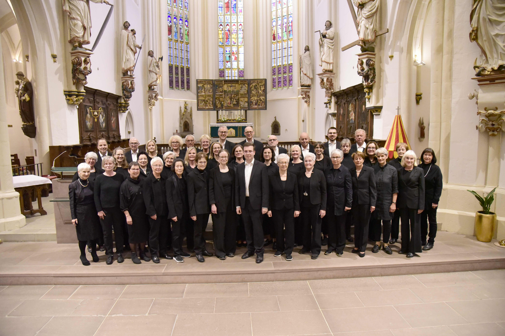

Über uns

Der Propsteichor St. Cyriakus ist ein traditionsreicher Chor an der Basilika minor St. Cyriakus in Duderstadt. Im Mittelpunkt seiner musikalischen Arbeit steht die feierliche Gestaltung und Verkündigung des Glaubens im Rahmen der Gottesdienste.
Darüber hinaus stellt der Chor seine musikalische Vielseitigkeit regelmäßig in Konzerten unter Beweis. Das umfangreiche Repertoire umfasst Werke aus verschiedenen Epochen. Auch bei Fernsehgottesdiensten war der Chor bereits musikalisch zu erleben.
Der Chor zählt rund 45 Sängerinnen und Sänger im Alter von 30 bis 75 Jahren. Neue Stimmen sind jederzeit herzlich willkommen – unabhängig von einer Zugehörigkeit zur Pfarrgemeinde.
Die wöchentlichen Proben finden mittwochs von 20:00 bis 21:30 Uhr im großen Saal des Pfarrheims statt.
Neben der musikalischen Arbeit spielt auch die Gemeinschaft eine wichtige Rolle. Regelmäßige Chorfahrten, Probenwochenenden und die Teilnahme an Kirchenmusiktagen bereichern das Chorleben. Ein besonderer Höhepunkt im Jahresverlauf ist das traditionelle Chorfest zu Ehren der heiligen Cäcilia, der Schutzpatronin der Kirchenmusik.